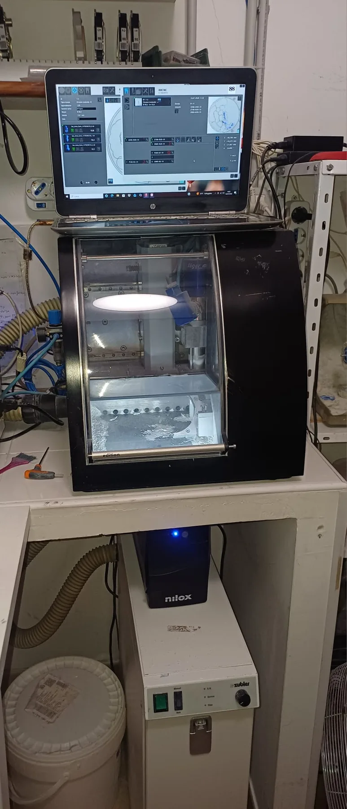
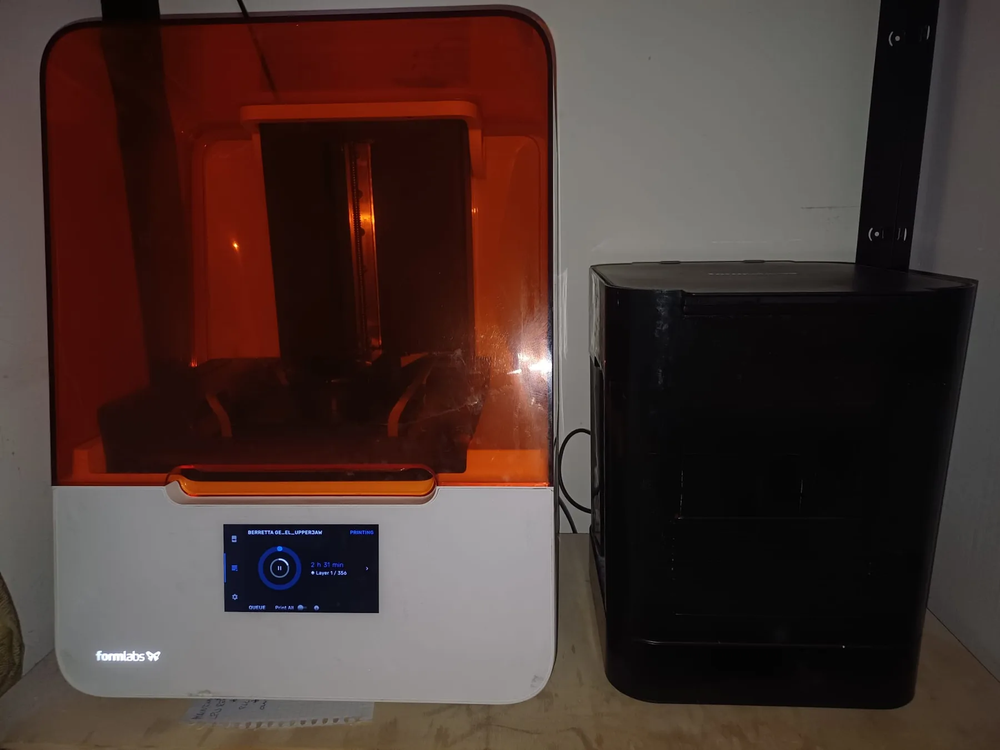
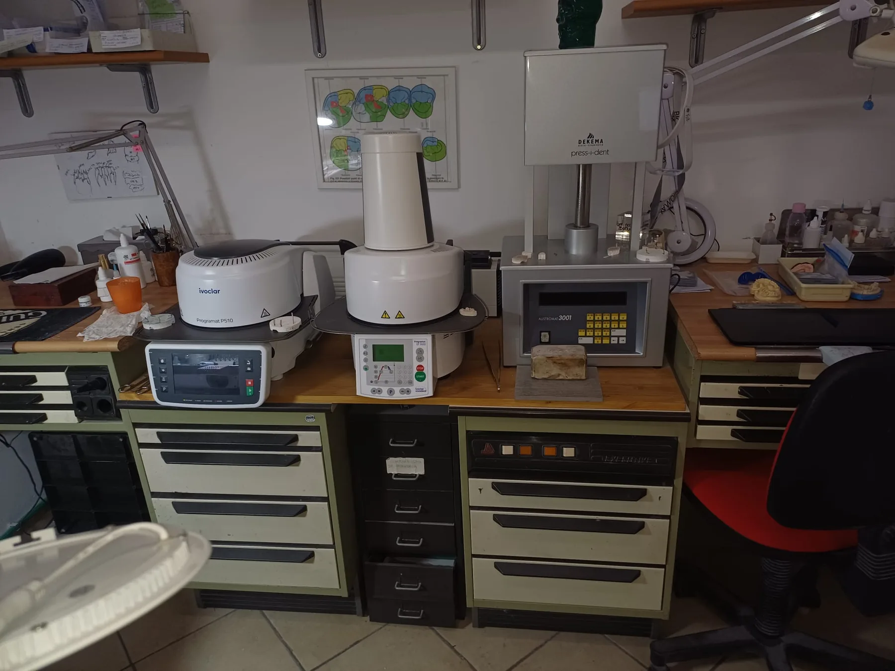
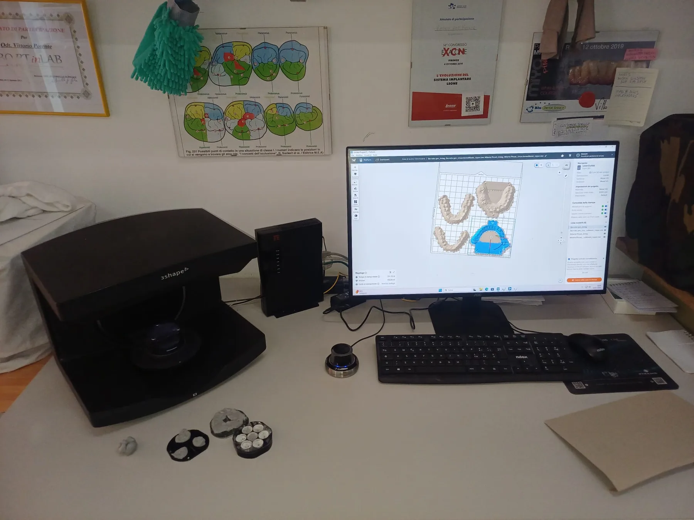
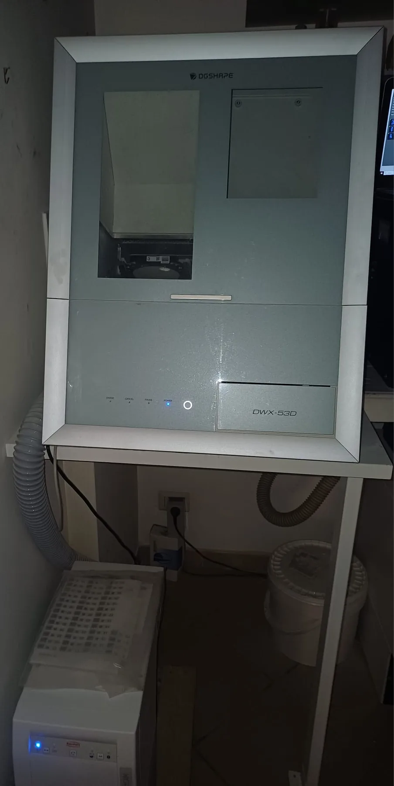

Tecnologie del laboratorio
Macchinari al servizio della precisione.
Il laboratorio integra esperienza artigianale e tecnologie digitali moderne per controllare ogni fase del lavoro, dalla scansione e progettazione alla produzione e finalizzazione dei manufatti.
Dotazione tecnologica
Un flusso di lavoro completo.
Scanner, fresatori, stampa 3D e sistemi per la ceramica permettono di lavorare con precisione, continuità e attenzione alla qualità. Clicca su una fotografia per visualizzarla a schermo intero.




